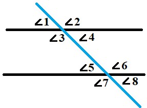
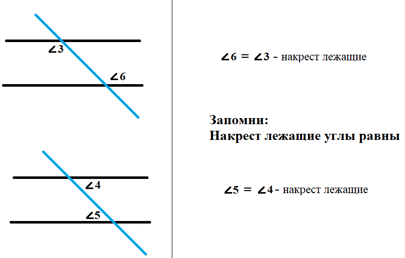
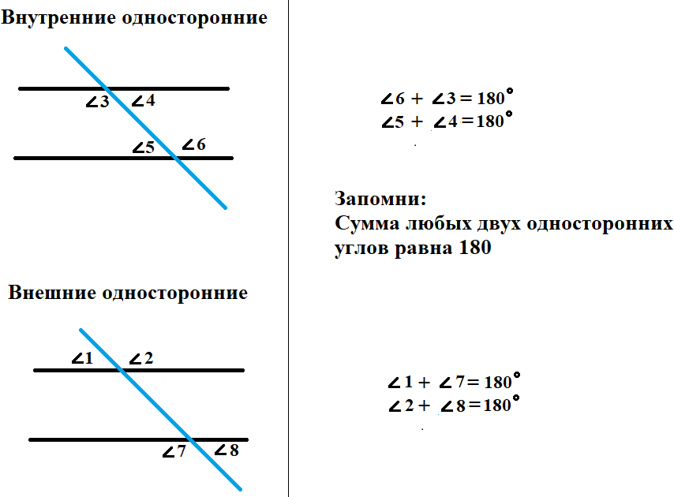
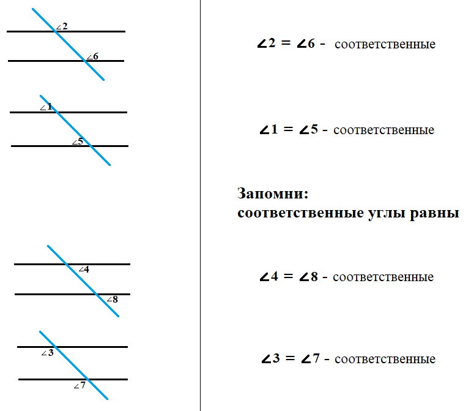
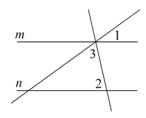
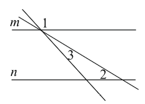
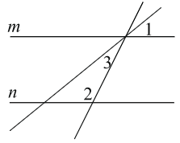

Теория
Параллельные прямые
- Параллельные прямые — это прямые, которые лежат в одной плоскости и не пересекаются, сколько бы их не продолжали: a || b.
- Секущая — это прямая, пересекающая две параллельные прямые: c
Аксиома параллельных прямых:
Через любую точку плоскости, расположенную вне данной прямой, можно провести единственную прямую, параллельную данной.
Рассмотрим ситуацию, когда две параллельные прямые пересечены секущей. В результате мы видим, что образовались 8 углов.
Чтобы правильно использовать эти углы, нужно во-первых знать, как они называются, во-вторых, нужно знать какими свойствами они обладают.
Накрест лежащие:
Название говорит само за себя: ∠3 и ∠6, так же, как и ∠4 и ∠5 лежат «накрест», то есть по разные стороны от секущей и «внутри», между прямыми a и b.
Односторонние углы:
Все просто: если углы односторонние, значит, они лежат по одну сторону относительно секущей. Существуют внутренние и внешние односторонние углы.
Внутренние односторонние углы лежат «внутри», между прямыми a и b: ∠3 и ∠5, ∠4 и ∠6.
Внешние односторонние углы лежат «снаружи» относительно прямых a и b: ∠1 и ∠7, ∠2 и ∠8.
Соответственные углы:
Обратим внимание, что ∠1 и ∠5, ∠3 и ∠7, ∠2 и ∠6, ∠4 и ∠8 лежат в одинаковых «соответственных» местах. Либо оба угла лежат выше параллельных прямых и лежат по левую сторону от секущей, либо оба угла лежат ниже параллельных прямых и лежат по правую сторону от секущей и так далее.
Теперь перейдем к главному, как использовать то, что мы узнали?
- Если в задаче даны или оказались параллельными две прямые, то как это использовать?
- Как узнать, что прямые параллельны?
Ответ на первый вопрос называется «свойства параллельных прямых», а ответ на второй вопрос называется «признаки параллельных прямых».
Свойства параллельных прямых
Если a || b, то:
- Накрест лежащие углы равны.
- Соответственные углы равны.
- Сумма любых двух односторонних углов равна 180°.
Признаки параллельных прямых
Если:
- Любые два накрест лежащих угла равны
ИЛИ- Любые два соответственных угла равны
ИЛИ- Сумма любых двух односторонних углов равна 180°,
то прямые a и b – параллельны (a || b).
! Обрати вниманиe, чтобы доказать параллельность прямых, достаточно выяснить, равенство всего двух углов (накрест лежащих или соответственных) или доказать, что сумма двух любых односторонних равна 180°, а уже все остальное становится доказанным.
Практика
1. Прямые m и n параллельны. Найдите ∠3, если ∠1 = 22°, ∠2 = 72°. Ответ дайте в градусах.
Показать решение
2. Прямые m и n параллельны. Найдите ∠3, если ∠1 = 133°, ∠2 = 43°. Ответ дайте в градусах.
Показать решение
3. Прямые m и n параллельны. Найдите ∠3, если ∠1 = 54°, ∠2 = 100°. Ответ дайте в градусах.
Показать решение